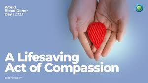

Your donation can make a big difference in someone's life.
Blood is a life-sustaining fluid that cannot be manufactured. It is essential for patients undergoing surgeries, treatments for chronic diseases, and emergencies.

The donation process is simple and takes less than an hour. It involves a health screening and the donation of about a pint of blood.

Donors must meet specific criteria, including age, weight, and health standards, to ensure safety for both donor and recipient.
Blood donations can save lives and also provide psychological benefits to donors, including fulfillment and improved cardiovascular health.

Many blood banks face shortages due to misconceptions and fear. Education and community drives can help increase donations.

Organizations like the Red Cross and WHO promote safe blood donation practices and work to ensure a steady blood supply globally.